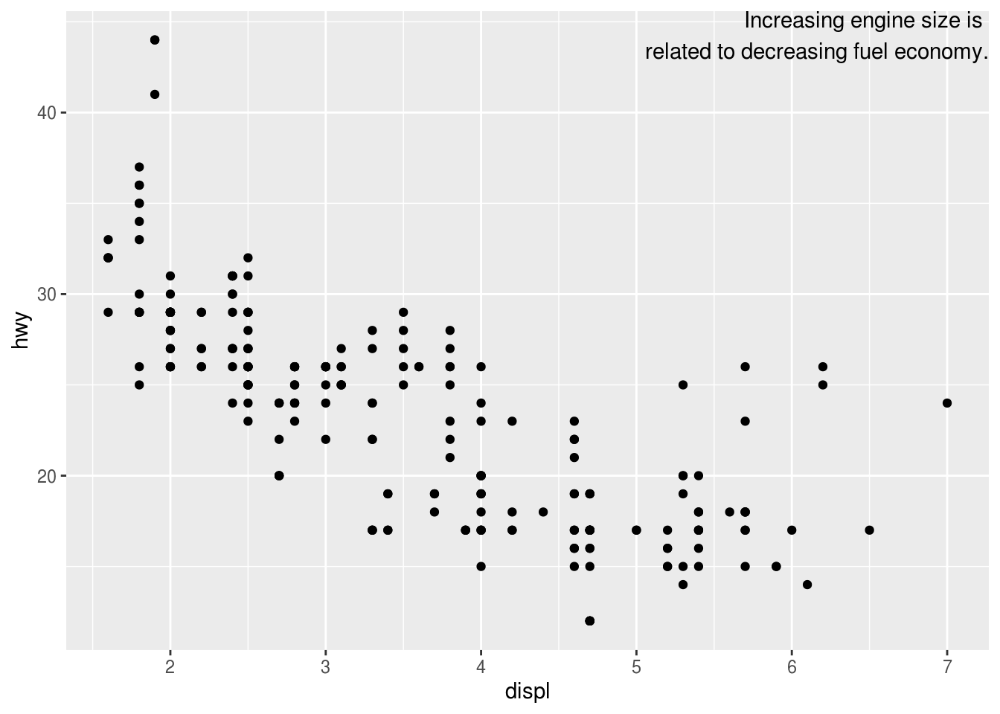
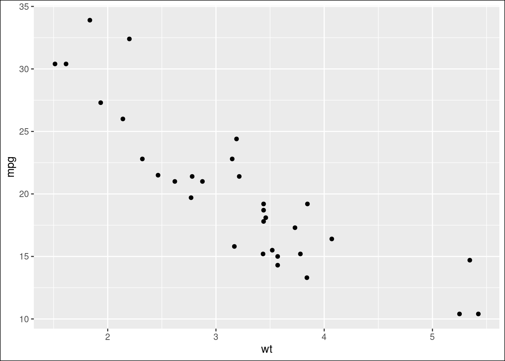
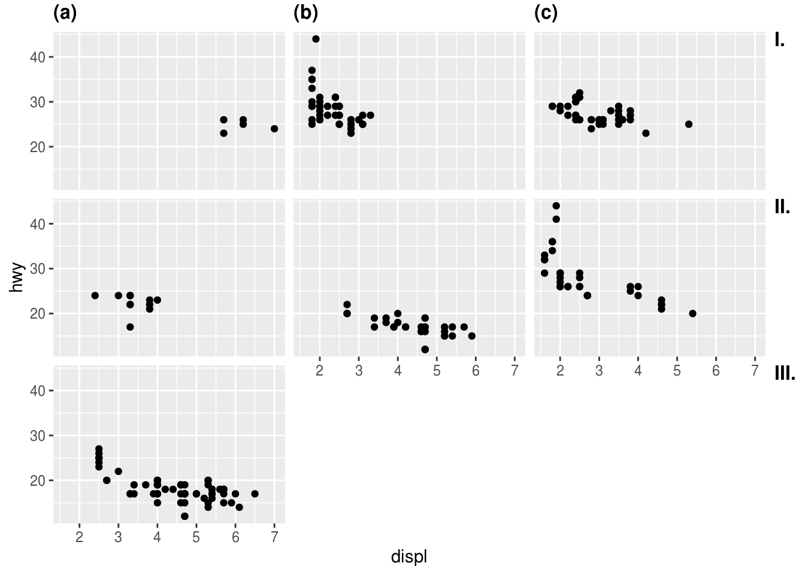

第1章 R 语言
1.1 R基础
根据序列长度进行迭代（循环）的时候，
1:seq_along(y)和1:length(y)有什么区别？应使用
1:seq_along(y)。当length(y) = 0时seq_along(y)返回integer(0)，基于1:seq_along(y)的循环会抛错； 而1:length(y)表示1:0的迭代，可能出现意想不到的结果。参见R for Data Science (Grolemund and Wickham 2019)You might not have seen
seq_along()before. It’s a safe version of the familiar1:length(l), with an important difference: if you have a zero-length vector,seq_along()does the right thing如果我们在
~/.Rprofile添加了初始化设置，那么如果当前工作目录中有含有.Rprofile的时候（如在github上fork的别人的项目中含有该文件），就会忽略~/.Rprofile中的设置。解决方法
# ~/.Renviron中设置site profile变量R_PROFILE=~/Rprofile.site，然后把之前.Rprofile的设置拷贝到~/Rprofile.site即可。这是因为R的启动的时候会在读取.Rprofile之前读取~/Rprofile.site中的设置。设置Alfred快捷打开rstudio的project
Preferences > Features > Default Results > Advanced，然后把任何
.Rproj文件拖入窗口，参考于此
1.2 可视化
1.2.1 基础图形
par("pin"),par("usr")par("pin")表示当前图形的尺寸用英寸表示(width * height)；par("usr")表示当前图形的坐标范围c(xmin, xmax, ymin, ymax)颜色代码的可视化，以便观察颜色
image(1, 1, as.matrix(1), col = "#E64B35")
1.2.2 ggplot
什么是individal geom 和 collective geom? 基于一行数据进行作图的
geom称为individal geom，如geom_point每行数据映射到图形中的一个点；基于多行数据作图的geom称为collective geom, 如geom_bar对多行数据进行统计变换计算其频数，也就是说多行数据映射到图形中的一个bar.如何正确使用 ggplot
aes(group)见这篇博客
修改连续坐标轴的范围
见这篇博客
修改离散坐标的顺序 见这篇博文
添加文本标注
使用
Inf或-Inf表征在边界添加文本# 例子源自https://r4ds.had.co.nz/graphics-for-communication.html library(ggplot2) label <- tibble::tibble( displ = Inf, hwy = Inf, label = "Increasing engine size is \nrelated to decreasing fuel economy." ) ggplot(mpg, aes(displ, hwy)) + geom_point() + geom_text(aes(label = label), data = label, vjust = "top", hjust = "right")
图形添加边框
设置
theme(plot.background = element_rect())ggplot(mtcars, aes(wt, mpg)) + geom_point() + theme(plot.background = element_rect(color = "black"))
等高线图
geom_contour()自定义levels手动指定参数
breaks(帮助文档中找不到该参数说明)，参考此.ggplot中文字体
ggplot分面添加tag (如A,B, C)，可参考此问题
p <- ggplot(mpg, aes(displ, hwy)) + geom_point() + facet_wrap(vars(class)) egg::tag_facet_outside(p) ## 字符 {#char}
1.2.3 正则表达式
正则表达式字符列表
[]用法：[]中的字符匹配字符本身，如[.]匹配.,而不是任意字符，因此可以使用[.]代替\\.,一些在[]内有特殊意义的字符除外，如-表示范围，^不包含这些字符，]结束括号，\在字符串中表示转义。正则表达式默认是进行贪婪匹配，即匹配最长字符串，在正则表达式后边加?表示最短匹配
表示重复次数的
*(任意次)、?(0或1次)、+(一次以上)优先级较高
1.3 可重复性研究
knitr多个代码块的输出折叠到一个pre块中
collapse = TRUE输出为github的markdown格式
github_document产生github的markdown格式，比如README.Rmd生成README.MDknitr 数据较大时设置缓存
代码块中的输出多个图形，怎么输出为一副图形？
figure.show默认为asis图形位于产生图形代码后面，多个作图语句就会产生多幅图形，figure.show='hold'就代码块结尾显示所有图形，即一个代码块产生一个图形。
1.3.1 bookdown
- 章节去除编号 章节后面添加 {-}
- 汉话：章节标题汉化，https://bookdown.org/yihui/bookdown/internationalization.html。配置文件`_bookdown.yml`
language:
ui:
chapter_name: ["第", "章"]The chapter_name field can be either a character string to be prepended to chapter numbers in chapter titles (e.g., ‘CHAPTER’), or an R function that takes the chapter number as the input and returns a string as the new chapter number (e.g.,
!expr function(i) paste('Chapter', i)). If it is a character vector of length 2, the chapter title prefix will bepaste0(chapter_name[1], i, chapter_name[2]), whereiis the chapter number.
1.3.2 tinytex
- pkgdown编译jss文档的时候出现，
! LaTeX Error: Fileae.sty’not found.` 说明缺少ae包，
References
Grolemund, Garrett, and Hadley Wickham. 2019. R for Data Science. https://r4ds.had.co.nz/.